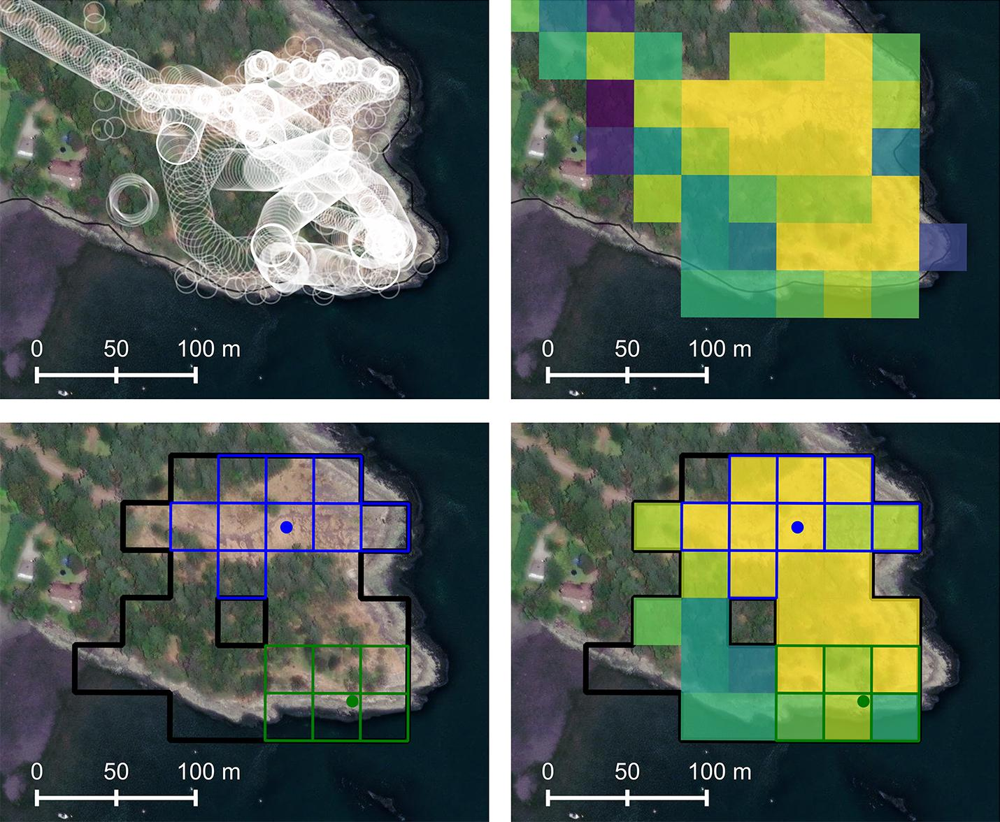
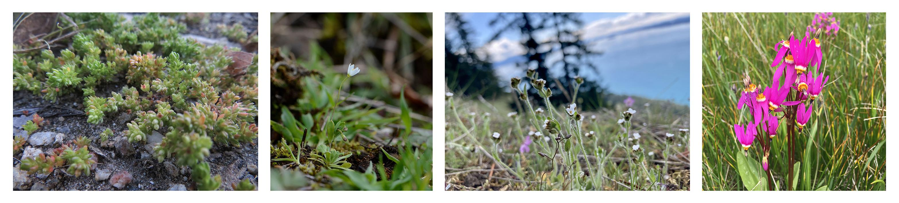
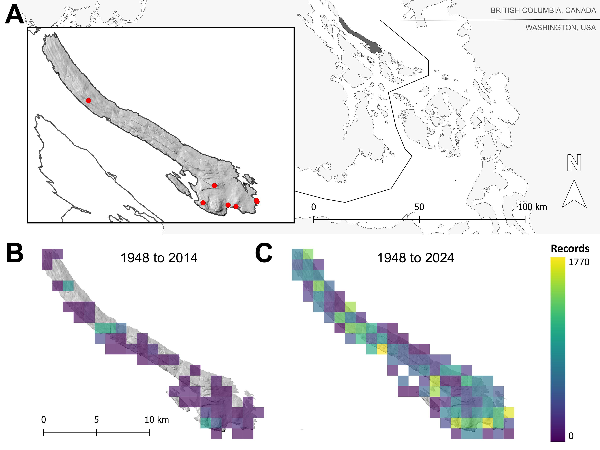
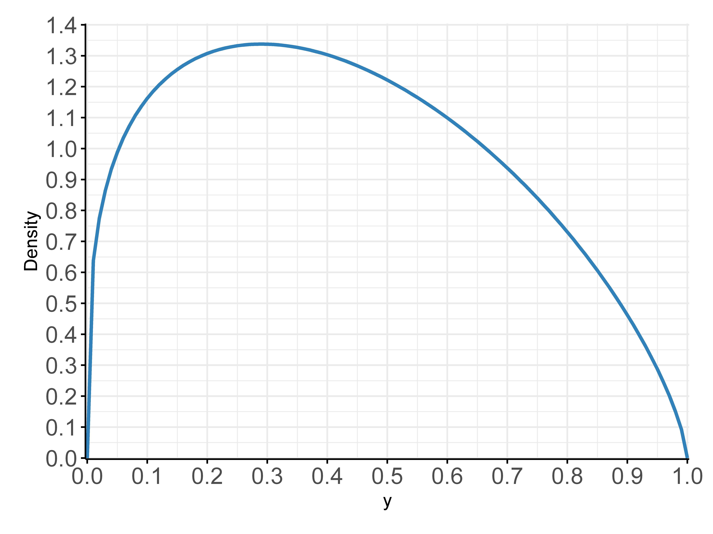
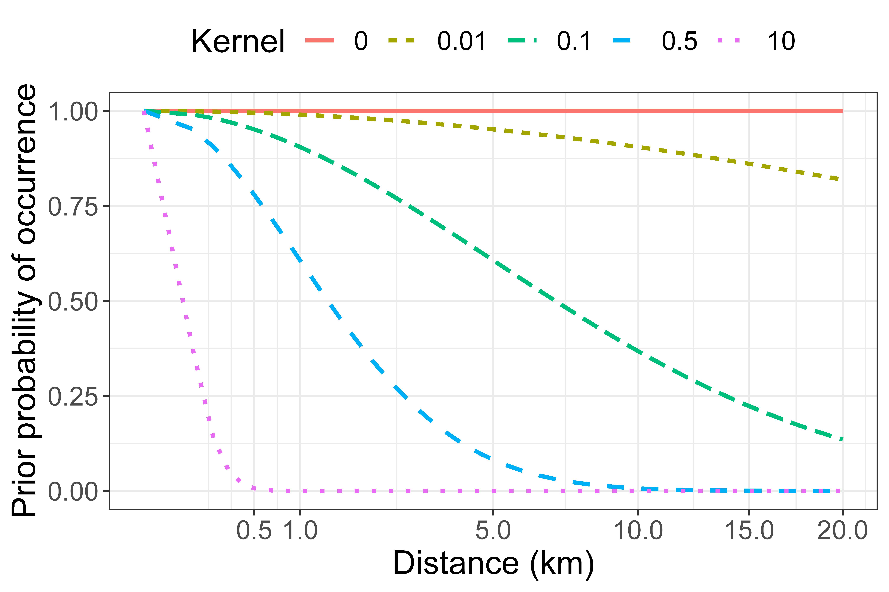

Detecting biodiversity change is a complex challenge, involving many “wicked problems”
that communities around the world must navigate to make progress toward the goals of
the UN Convention on Biological Diversity.
This protocol is fully developed and implemented in the research article published in Plants, Planet, People.
Through this documentation, we provide a walk-through of this framework, centering on a tutorial dataset.

1 - Overview
Extinction happens one population at a time.
Extinction events are the sum of all extirpation events, with the vanishing of all individuals of a species. Thus, to address the global threat of biodiversity loss, communities must develop systems for the early detection and prevention of extinction as it occurs locally.

We need systems that allow communities to track biodiversity change locally, to curb biodiversity loss at its source.
1.1 - IUCN extinction criteria
Operationalizing a protocol for the detection of local extinction
To meet global standards set for inferring extinction, the practical application
of statistical inference must be framed around criteria set out by the International
Union for the Conservation of Nature (IUCN, 2012) for the assessment of extinction events.
The IUCN defines a taxon as ‘presumed extinct’ (in our case, equivalent to extirpated—or
locally extinct) “when exhaustive surveys in known and/or expected habitat, at
appropriate times (diurnal, seasonal, annual), throughout its historic range have
failed to record an individual.”
However, it remains a major challenge to determine the evidentiary thresholds implied by these
criteria (‘exhaustive’, ‘expected’, ‘appropriate’), not only to clarify the formal requirements
for claims regarding extirpation but also to inform effective search methods and to assess the feasibility
of meeting these requirements.
Our goal is to transform the abstract problem of assessing extinction into a structured,
measurable, and actionable process. With that goal in mind, the following
documentation seeks to clarify the steps and assumptions embedded within IUCN extinction
criteria—assumptions that often present challenges for communities seeking to
apply them in practice.
2 - Baseline analysis
A first pass approach to biodiversity change assessments
Early assessment of local exinction risk
Baseline analyses offer a simple but useful preliminary approach to assessing
biodiversity change. By comparing historical collections data with contemporary
“big biodiversity data”, such as those available via the Global Biodiversity
Information Facility or iNaturalist, we can identify species or populations that
may potentially be at risk of local extinction. Keeping this approach simple, we can
overcome some of the immediate challenges posed by the analysis of complex
biodiversity data sets.
2.1 - Data synthesis
Dealing with messy data
Combination of heterogeneous data in baseline analyses
Statistical approaches to modeling biodiversity change are often paralyzed by limitations and deficiencies inherent
in biodiversity data—especially when historical and contemporary data are combined from multiple sources.
Data are commonly unstructured, or heterogeneous, lacking consistent attributes or metadata
Data are often biased toward positive detections (lacking absence information)
Data may be collected in ways that violate the assumptions of statistical models
Georeferencing is often generalized based on vague locality information
Data may be sparse, with few or perhaps only singleton records to vouch for historical populations, especially at local scales
Baseline analyses offer a practical approach
A practical approach to this difficult situation is to forego any advanced modeling practices ab initio
and begin instead with a simple baseline analysis of historical vs contemporary sources of biodiversity data.
This depends on normalization of species occurrence data to support the comparison of historical and contemporary species records.
Normalization of biodiversity data is a thorny enough problem in its own right and not treated here. For this
tutorial we assume that names are aligned and any synonymy is resolved between the data being compared.
Best practices are to adhere to the Darwin Core standard for species occurrence data.
Different communities may prefer to adhere to different taxonomic databases. Any taxonomic standard can be observed, as
long as it results in consistent mapping of taxa between datasets.
### Integrate biodiversity data and summarize
2.2 - Comparing data
The difference that makes the difference
Identifying potential changes
Differences between historical and contemporary biodiversity data could potentially indicate change in the system:
In conservation assessments, historically reported species that have not been seen within XX years are often considered
‘historical populations’ whose persistence is in question (XXXX)
Conversely, species that appear suddenly in a biodiversity record may signal a recent dispersal or colonization event
Here, we focus specifically on “species at large”, or historical reports that have gone undetected in recent decades.
# Not seen in the last 20 years
Populations or species that have gone undetected for many years may be considered at risk of extirpation and targeted for assessment.
However, there are other important criteria to consider before undertaking such an effort.
2.3 - Target selection criteria
Honing focus on biodiversity change
Open-ended assessments of potential change
In order to proceed beyond an initial baseline analysis to assess possible changes in a system, we can set
useful criteria to focus our attention (and limited resources) on species that are most likely to be vulnerable.
Depending on the criteria we set, there may emerge many potential target species or populations of concern.
On the first pass, however, it is notable that this decision-making process is blind to any conservation priorities we may have,
which can bias biodiversity change assessments.
“Conservation programs often prioritize species-at-risk, even while many common species may undergo the highest relative losses.”
Criteria to consider
Coordinate uncertainty
Geographic coordinates represent one of the most crucial pieces of information for biodiversity change assessments.
Often we are confronted with limited locality information, which imposes constraints on representation of historical habitat
Sometimes, the information is good enough to map species occurrences to precise locations (e.g., 30x30m2 grid cell)
Sometimes, the information is good enough to specify a discrete location or habitat patch
Sometimes, coordinates are generalized to the geometric centre (centroid) of a given area, with a wide radius of coordinate uncertainty
Sometimes, we don’t have any coordinates at all
It is exceedingly difficult if not impossible to assess the status of species or populations that lack specific locality information.
At the very least, we will want to ensure our targets have coordinates:
# Filter out records lacking coordinates
(Depending on the approach, one might want to be more strict and filter records below a certain threshold of coordinate Uncertainty)
Provenance
Commonly, we are only concerned with the disappearance of native plants from the landscape.
# Filter native species
#
Historical evidence
Biological specimens are the strongest evidence we have for biodiversity change assessments.
# Filter voucher specimens
#
Taxonomically difficult or cryptic species
# Filter out graminoids
#
Number of occurrences
The number of times a species occurs in a historical record can be useful information to consider:
A low number of occurrences could potentially signal rarity or vulnerability.
The more species occurrences, the more confidence we can have that a species was well established historically.
This prior knowledge can help to inform our assessment of the vulnerability of species to local extinction.
# Tabulate species record counts
#
2.4 - Example
Before the beginning of the BioGaliano project in 2015, a total of 607 vascular plant species were reported for Galiano Island, represented by 1,698 records, including 446 herbarium specimens (Fig. 1).
After five years of concerted search effort, amounting to >18,000 observations, we documented 560 species on the project, confirming 433/607 historical species reports (71% of the historically reported diversity) and adding 127 new species to the list.

Figure 1. Baseline analysis of Galiano Island’s vascular plant diversity
3 - Inferring extirpation risk
Detection frequency as key metric for population assessments
Detection frequency
Another metric that might be considered in evaluating extirpation risk is detection
frequency or sighting rate. Whether a species was observed only once historically,
or multiple times, before going unreported, might influence our prior belief in the
likelihood of its persistence or extirpation.
If there are many records vouching for a species’ historical occurrence, we might have
greater confidence that it was a well established population
If a species is only reported once or twice, historical populations may have been small or non-viable, or perhaps the species
is simply rare and overlooked
Sighting rates constitute useful prior knowledge and can be used to calculate extinction probabilities.
3.1 - Solow calculation (Prior I)
Calculating extirpation probabilities based on sighting rates
Inferring local extinction based on limited occurrence data
Solow (1993) provides a framework for determining a reasonable prior distribution
for belief about species extinction when observational data are limited.
Their Equation 3 presents a Bayes Factor for summarizing evidence in favor of extinction,
given by: \(B(t) = (n -1) / [(T/t_n )^(n - 1) - 1]\) where \(n\) is the number of observations and \(Ti\)
represents the \(ith\) sighting time and \(T\) is the present date.
3.2 - Example
Let’s consider two vascular plant species as a case study for inferring extinction probabilities.
4 - Representing habitat
Gridding land classification data
Mapping habitat
Habitat can be represented in many ways, ranging from complex species distribution models
to relatively simple ecosystem mapping or site classification data.
In this tutorial, we use high resolution () site classification mapping to map habitat for our target species.
This spatial data takes the shape of polygons circumscribing different ecosystem types or areas of land use.
For many regions, there exist databases where this type of spatial data can be accessed.
Filtering site classification mapping based on habitat types for target species
XXXXXXX
Converting polygons to gridded representation of habitat
XXXXX
For this methodology, a key consideration is to ensure that the grid scale
corresponds with precision in features representing search effort.
## Convert polygons to grid
Calculate proportional representation of habitat within grid cells
## Calculate prop. of habitat falling within grid cells
4.1 - Defining historical habitat patches
Situating target species in the context of historical habitat patches
Mapping target species
XXXXXXX
Defining area of habitat patches based on coordinate uncertainty of target occurrence records
XXXXXXX
4.2 - Defining potential habitat patches
Situating target species in the context of potential habitat
Mapping potential habitat
In the previous habitat mapping vignette, we defined the extent of historical habitat.
Expanding the habitat grid to include potential habitat
XXXXX
4.3 - Example
This is a placeholder page that shows you how to use this template site.
Do you have any example applications or code for your users in your repo
or elsewhere? Link to your examples here.
5 - Search effort
Incorporating search effort
Search effort is represented as a per-observer search time per gridded cell
represented in ksec. Search effort is applied only to valid potential
or historical habitat for the target taxon. Where the habitat model indicates
that only part of a grid cell is valid habitat, the imputed search effort
is scaled up proportionally.
# From Analyse.R, # Assemble the cells which truly lie within the habitat together with their proportion of overlapanalyse_target<-function(thisTarget,detected=FALSE){....effortCells_intersect<-st_intersection((accepted_grouped_sf%>%filter(search_effort>0)),allHabitat)%>%mutate(area=st_area(.)%>%as.numeric(),area_prop=area/oneArea)%>%select(cell_id,area,area_prop)%>%st_drop_geometry()}
6 - Inferring extirpation
Updating the posterior based on search effort
After a gridded search effort density dataframe has been assembled,
inference of extirpation risk proceeds in two stages.
In the first stage, we infer an posterior distribution for extirpation
probability for each cell in historical and potential habitat.
In the second stage, these per-cell estimates are pooled into regional
estimates for extirpation, forming quantified proxies for the IUCN
extinction criteria, complete with uncertainty estimates.
At both stages, prior and posterior estimates of extirpation are modelled using
Bayesian inference on distributions from the beta family.
6.1 - The beta distribution
Representing extirpation probabilities
A convenient choice for rapid Bayesian inference
The beta distribution is a convenient choice for representing Bayesian inference on
a probabilistic quantity such as probability of extirpation or probability of sighting.
It is a distribution on the interval \([0, 1]\) which allows us to quickly estimate
these probabilities and also summarise our confidence of these estimates, represented
by how peaked the distribution is around its maximum.

make_beta<-function(prob,weight){c(prob*weight,(1-prob)*weight)}# Beta distribution statistics from https://en.wikipedia.org/wiki/Beta_distributionbeta_mean<-function(bf){bf$alpha/(bf$alpha+bf$beta)}beta_variance<-function(bf){bf$alpha*bf$beta/((bf$alpha+bf$beta)^2*(bf$alpha+bf$beta+1))}
We aimed to model the probability of a species’ extirpation in a particular area. For consistency with mathematical treatments, we present calculations with a random variable \(θ\)
encoding the probability of presence in the range \([0, 1]\) and convert to \(1-θ\), the probability of extirpation when we summarise our results.
Observations of presence or absence \(y_t\) are governed by a Bernoulli process with parameter \(θ\), where \(p(y_t |θ)=θ\) if \(y_(t )=1\) represents presence.
Following the notation of Royle and Dorazio (2008), we updated our prior beliefs (prior distribution \(π(θ)\)) using a probabilistic model (likelihood function \(f(y|θ)\)) to derive posterior beliefs (posterior distribution \(π(θ|y)\)). This produces the classical form of Bayes theorem for inference written as:
$$π(θ|y) ∝ π(θ)f(y|θ)$$ (Equation 1)
We modeled the probability of presence by the beta distribution on \([0, 1]\), which is described by two shape parameters \(α\) and \(β\) and takes the form:
$$f(y|α,β) ∝ y^(α-1) (1-y)^(β-1)$$ (Equation 2)
This is a convenient choice because, under the Bayesian framework, we can select a conjugate prior within this family, which leads to a posterior distribution in the same family. Given our observations of target species take the form of binary variables (all representing non-detection), these can be placed within a hierarchical Bayesian modeling context where the shape parameters \(α\) \(β\) represent hyperparameters for our modeled distributions.
6.2 - Effective search effort
Calculating the posterior distribution for one cell
The IUCN defines a taxon as ‘presumed extinct’ “when exhaustive surveys in known and/or expected habitat …
have failed to record an individual.”
What constitutes a complete search?
Imagine yourself in a \(30×30m\) area (better yet, get out into the field to think this through!)
How much time do you think you need to adequately search this area?
There are many factors to consider here, including the size of the target organism, the complexity of its environment,
search conditions, the surveyor’s efficacy, etc..
This is not a simple geometric problem, or challenge of covering every \(m^2\) of an area.
Best practices for species inventory and rare species surveys recommend
the “intuitive search” as the most effective approach, because species often occupy
specific niches that are unevenly distributed across the landscape.
Unless one has data to calculate detection probabilities, it is not possible to fit a fully probabilistic model
to solve this problem. Hence, we must resort to a heuristic: how much effort do we
need to exhaust in an area before we are satisfied that our search is complete?
Our method incorporates a search weight parameter \(W_s\) that must be defined to infer
extirpation probability for a given cell. We propose this parameter as a necessary heuristic,
which provides a means of overcoming the impasse posed by alternative modeling approaches
(e.g., MCMC), which are data hungry and cannot be satisfied in this context.
This parameter should ideally be assigned a priori with careful consideration for the
study system or target organism.
Under Bayesian inference, our beta distribution parameters on an unsuccessful
Bernoulli trial (representing a failure to observe) will update from \((α,β)\) to \((α,β+1)\).
However, given the search is a continuous process, we have a free parameter representing
the quantity of search effort that represents a discrete “trial”—our search effort \(S_t\)
in a particular cell results in a posterior update to \((α,β+S_t W_s)\) where \(W_s\)
represents the weighting applied to search effort.
This weighting depends on many factors influencing the efficacy of initial
intuitively reasoned search efforts, including the searcher's efficiency,
the species' detectability, or the search conditions.
Hence, this free parameter should be considered in relation to \(W_p\).
Our weighting was set by eliciting a defensible level of confidence in extirpation
given varying amounts of search effort within a single \(900m^2\) cell, leading to a value
\(W_s\) of \(15\) (Supplementary Materials).
6.3 - Pooling search effort
Calculating the posterior distribution for a region
Having arrived at individual values for the beta parameters for each
cell in a region (historical or potential), we then transfer these
into beta parameters for a regional distribution using moment matching:
# Compute beta parameters given moments# Taken from https://stats.stackexchange.com/a/12239beta_params_from_moments<-function(mu,var){alpha<-((1-mu)/var-1/mu)*mu^2beta<-alpha*(1/mu-1)return(params=list(alpha=alpha,beta=beta))}apply_region_moments<-function(stats,mu,var){params<-beta_params_from_moments(mu,var)hdi<-hdiBeta(params$alpha,params$beta,p=0.9)fields<-list(Central=rp(1-mu),Low=rp(1-hdi[2]),High=rp(1-hdi[1]),alpha=rv(params$alpha),beta=rv(params$beta),mu=mu,var=var)modifyList(stats,fields)}
7 - Inferring extirpation in historical habitat
Updating the posterior based on search effort
Intersecting search effort with gridded habitat
XXXXXX
## Convert polygons to grid
7.1 - Example
Before the beginning of the BioGaliano project in 2015, a total of 607 vascular plant species were reported for Galiano Island, represented by 1,698 records, including 446 herbarium specimens (Fig. 1).
After five years of concerted search effort, amounting to >18,000 observations, we documented 560 species on the project, confirming 433/607 historical species reports (71% of the historically reported diversity) and adding 127 new species to the list.
8 - Inferring extirpation in potential habitat
Updating the posterior based on search effort
Inference of extirpation in potential habitat proceeds as with inference
for historical habitat, with the additional element to the analysis that our
prior probability of extirpation is modified by a distance kernel, which assigns
decreasing probability of persistence with increasing distance from historical
habitat.
8.1 - Inverse distance prior
Insights from metapopulation theory
Estimating the likelihood of a plant’s occurrence beyond the extent of its historical habitat presents a Wallacean dilemma, as species often exhibit restricted distributions despite the apparent availability of suitable habitat (Lomolino, Riddle and Brown., 2006). To address this dilemma, we applied the negative exponential distance weighting system widely used in metapopulation ecology to model patch-occupancy dynamics (Hanski, 1994; Hanski et al., 2017; Yeiser et al., 2021; Hanski & Ovaskainen, 2002). This method was chosen for its analytical simplicity, based on the assumption that patch occupancy probabilities decrease with varying distance from historical source populations, depending on the rarity patterns of target plants.
We selected kernel values by linking them with rarity types (Kruckeberg and Rabinowitz, 1985; Crisfield et al., 2024) and then assigning typologies to target species. Kernel assignments were justified by comparing plotted distance decay rates with regional distribution patterns of target plants. Validation was also drawn from comparisons with the observed distance decay rates of detected targets relative to the position of first historical records (Supplementary Materials). This gives rise to a distance-based prior distribution for presence Pd = exp(-d) where d represents the distance of the patch from a historical record and represents the kernel value.

8.2 - Rarity types
Insights from metapopulation theory
XXXX
## Calibrating
8.3 - Kernel validation
Insights from metapopulation theory
For detected species, negative-exponential kernels were estimated empirically by regressing the distances of species detections from the position of initial records, against the background of unsuccessful detections. This was done with the brms package (Bürkner, 2017) using Markov Chain Monte Carlo sampling in STAN. Our regression applies the Bernoulli distribution family to the target detection via a modelling function
\(occupancy_i 〜 q .exp( d_i) \) where is the kernel width, q scales the overall detection rate (not of interest to this analysis) and di is the distance from historical habitat of occupancy observation \(occupancy_i\).
## Calibrating
8.4 - Example
Before the beginning of the BioGaliano project in 2015, a total of 607 vascular plant species were reported for Galiano Island, represented by 1,698 records, including 446 herbarium specimens (Fig. 1).
After five years of concerted search effort, amounting to >18,000 observations, we documented 560 species on the project, confirming 433/607 historical species reports (71% of the historically reported diversity) and adding 127 new species to the list.
9 - References
Low level reference docs for your project.
This is a placeholder page that shows you how to use this template site.
If your project has an API, configuration, or other reference - anything that users need to look up that’s at an even lower level than a single task - put (or link to it) here. You can serve and link to generated reference docs created using Doxygen,
Javadoc, or other doc generation tools by putting them in your static/ directory. Find out more in Adding static content. For OpenAPI reference, Docsy also provides a Swagger UI layout and shortcode that renders Swagger UI using any OpenAPI YAML or JSON file as source.